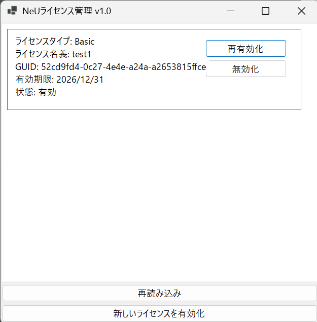
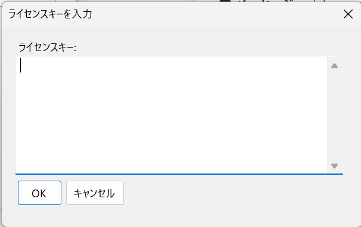

NeUライセンスマネージャー
はじめに
本SDKを利用するには発行されたライセンスを受け取り、NeU ライセンスマネージャーによるラインセンス有効化が必要になります。
ライセンスが有効化されていない状態で本SDKを利用しようとすると、例外処理が返ってくるような仕様になっております。
NeUライセンスマネージャーの概要
NeU ライセンスマネージャーは、NeU 製品のライセンスを管理するための Windows デスクトップアプリです。 複数のライセンスを同時にインストールして使用でき、各ライセンスの状態確認や、有効化・再有効化・無効化を行うことができます。
本ツールでは以下の操作が可能です：
- インストール済みライセンスの一覧表示
- ライセンスの新規有効化
- 既存ライセンスの再有効化（サーバーとの同期）
- ライセンスの無効化
- ライセンス状態の日本語表示
- 手動の再読み込みによる最新状態への更新 ライセンスに関する処理はすべて NeU ライセンスシステムを通して行われます。
主な機能
複数ライセンスの同時管理
複数のライセンスがインストールされている場合、それらを一覧で確認できます。
サーバー連携
有効化・再有効化・無効化は NeU ライセンスサーバーと通信して行われます。
ローカルライセンス情報の確認
ローカルに保存されているライセンス情報（有効期限、GUID、名義など）を表示できます。
ライセンスの内容
一覧に表示される各ライセンスには、以下の情報が含まれます。
ライセンスタイプ ※2026-04-30時点 調整中
- Developer：外部開発者向け
- Commercial：アプリ利用者向け
- Basic：NeUライセンスマネージャーが登場する以前に発行されたTomatoライセンス
ライセンス名義
ユーザーまたは企業名
GUID
ライセンス固有の識別子
有効期限
「無期限」または指定された日付（YYYY/MM/DD）
状態
有効期限切れ/破損/ハードウェア不一致/PC の時刻が正しくありません/その他/不明（英語名が表示されます）
ユーザーインターフェース
画面は以下のように構成されています。

再読み込み
ライセンス情報を再読み込みし、画面を最新状態に更新します。以下の場合に使用します：
- 外部ツールでライセンスを変更した
- 有効化・無効化後に画面が更新されていない
- 状態を手動で確認したい
新しいライセンスを有効化
ライセンスキー入力ダイアログが開き、入力されたキーをサーバーに送信して以下を行います：
- ライセンスの登録（新規・更新）
- ローカルストアへの保存
- 成功またはエラーの表示
- 一覧の自動更新

再有効化 (各ライセンス上に表示)
サーバーとライセンス情報を再同期します。次の場合に使用します：
- システム時刻を修正した後
- サーバー側の設定が更新された
- ライセンスの状態がおかしいと感じた場合
- 有効期限の延長などが行われた場合
無効化 (各ライセンス上に表示)
ライセンスをローカルから削除し、サーバー上でも無効化します。次のような場合に使用します：
- PC を変更する
- ライセンスを他のユーザーに移したい
- 端末からライセンスを削除したい
- 再度有効化することも可能です（契約内容に依存します）。